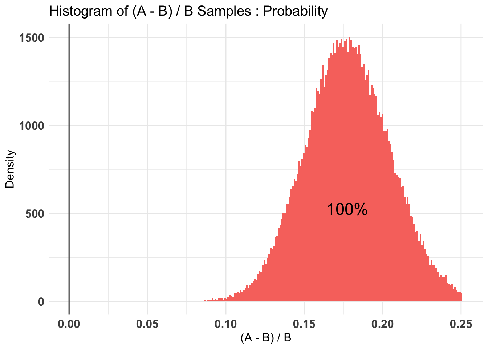
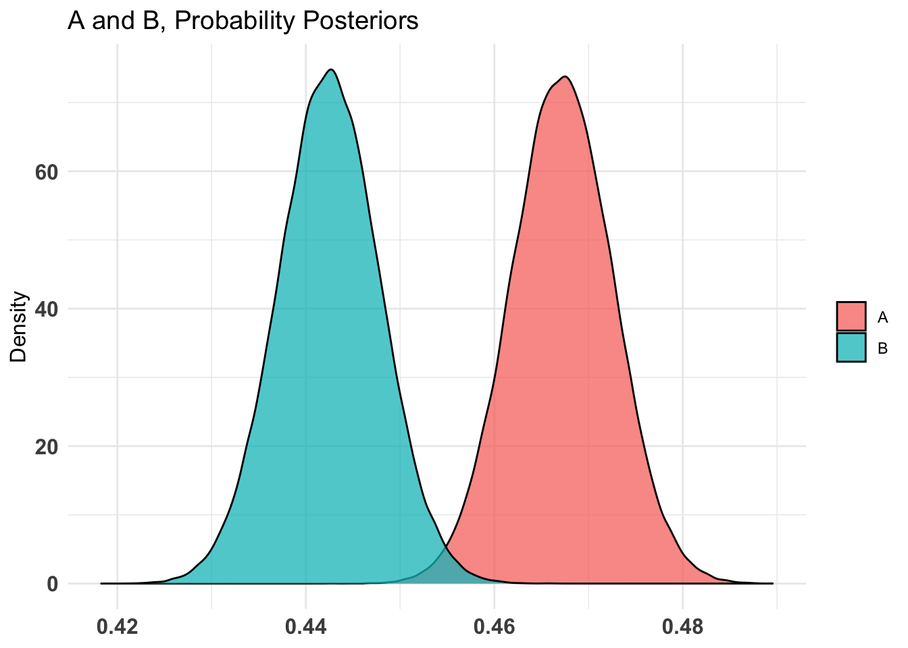
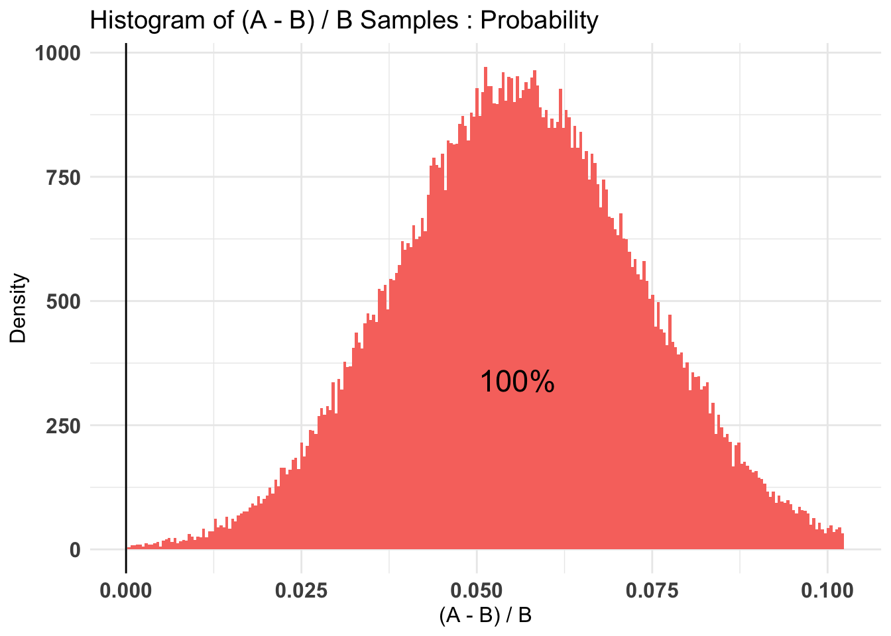
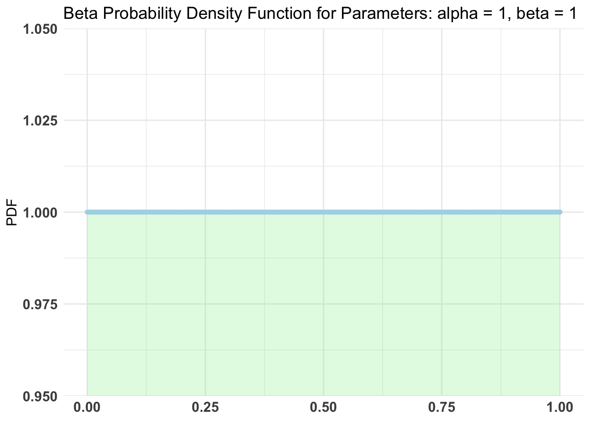
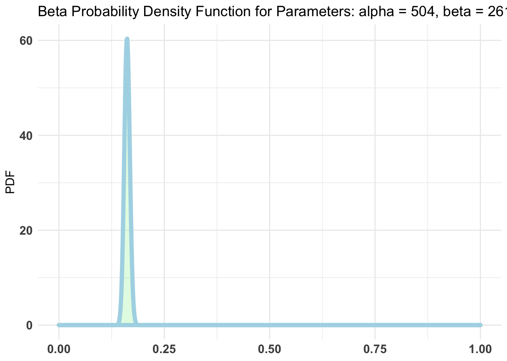
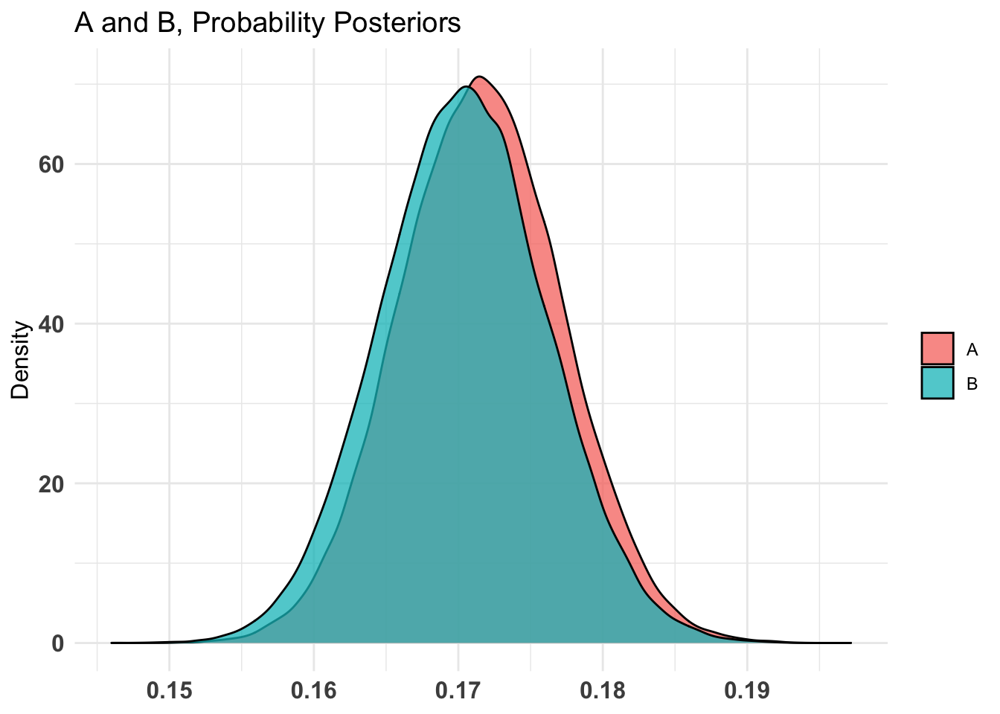
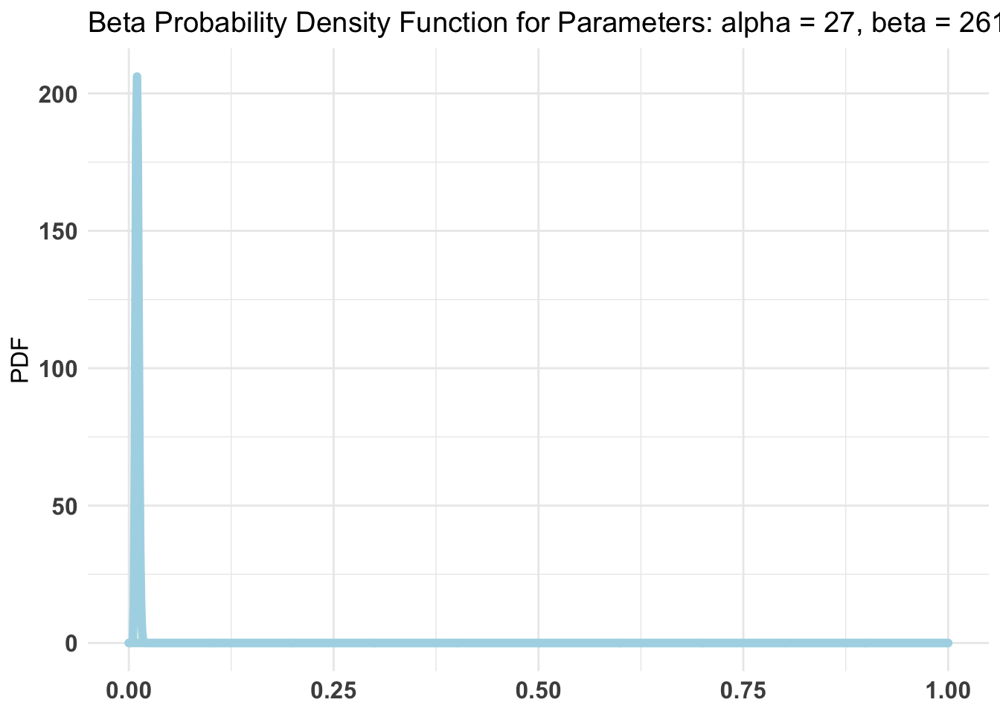

In December 2021, One For the World (OftW) sent out a sequence of emails to existing OftW pledgers/participants asking them for an additional donation. There were two ‘treatment variants’; an emotional email and a standard impact-based email. The treatment was constant by individual (the same person always got emails with the same theme).
The details are presented in our gitbook HERE and in the preregistration linked within (also on OSF).
4.2 Capturing data
Kennan and Chloe captured the data and metadata from
The OFTW database
SurveyMonkey
Putting this into the (private) Google sheet linked HERE. We added some metadata/explainers to that data.2
4.3 Input and clean data
We input the sheets from the external Google sheet location (access required)…
oftw_21_22_mc
gs4_auth(scope ="https://www.googleapis.com/auth/drive")drive_auth(token =gs4_token())#Mailchimp dataoftw_21_22_mc <-read_sheet("https://docs.google.com/spreadsheets/d/1iUKXkEqoadBgtUG_epBzUzCgA_J5mdWWstcXtpAdNJs/edit#gid=521638649",sheet="Raw data (Mailchimp)") %>% dplyr::select(-`Treatment group`) %>%#remove an un-useful repeated name columnmutate(`Treatment Group`= purrr::map_chr(`Treatment Group`, ~ .[[1]])) %>% dplyr::select(`Email Address`, `Email Date`, `Treatment Group`, Opens, `Donate link clicks`, everything()) %>%#Most relevant features organized firstarrange(`Email Address`)#later: remove features brought in from OFTW database, reconstruct itoftw_21_22_mc %>%names() %>%paste(collapse=", ")
[1] "Email Address, Email Date, Treatment Group, Opens, Donate link clicks, sheet_descriptor, First Name, Last Name, Email Number, Class Year, Donor status, Total Given, Donation amount, Donation frequency, Start string, Platform, Portfolio string, Class lead, Impact 1, Impact 2, Impact 3, Employer, Pledge string, School string, Pledge year, Cancellation Type, Donation Amount String, OFTW matching, OFTW match amount, Corporate match amount, Bonuses announced, Post-bonus contact date, Email Preferences, Start Date, Lives Saved, Member Rating, Record rank, Total Giving Season contributions, Total Giving Season contribution amount"
oftw_21_22_mc
#...input descriptors for the above (do this later from "doc: ...Mailchimp" sheet
oftw_21_22_db_don
#Donations data (and OftW database info)oftw_21_22_db_don <-read_sheet("https://docs.google.com/spreadsheets/d/1iUKXkEqoadBgtUG_epBzUzCgA_J5mdWWstcXtpAdNJs/edit#gid=521638649",sheet="Giving Season contributions (BigQuery)") %>%mutate(`Treatment group`= purrr::map_chr(`Treatment group`, ~ .[[1]])) %>% dplyr::select(`email`, `primary_email`, `donation_date`, `Net_Contribution_Amount_USD`, `payment_platform`, everything()) %>%#Most relevant features organized firstfilter(donation_date>=as.Date("2021-11-15")) # At least for now, remove pre-treatment donation dataoftw_21_22_db_don %>%names() %>%paste(collapse=", ")
#todo: simple statistical measures along with this
4.3.2 Constructing outcome measures, especially ‘donations likely driven by email’
Donations (presence, count, amounts) in giving seasons, 1 row per user (with treatment etc.)
overall
non-regular
‘likely from email’
are in Giving Season contributions (BigQuery)
subset for payment platform = squarespace (unlikely to come from any other checkout page)
email as primary key, link to Raw Data (mailchimp), filter on ‘Donate link clicks`>0 (note that one needs aggregating by donor because it is ’per email’)
Giving season donations ..
Giving Season contributions (BigQuery), sum donation_date Net_Contribution_Amount_USD with filters for one-time etc
Can check against fields ‘Total Giving Season contributions Total Giving Season contribution amount’
Code
#list/matrix of rates for later useoc_mat <- oftw_mc_db %>%mutate(d_open=n()) %>%group_by(treat_emotion) %>% dplyr::summarise(across(starts_with("d_"), ~sum(.x, na.rm =TRUE), .names ="tot_{.col}"))oc_mat_r <- oc_mat %>%filter(!is.na(treat_emotion)) #where treatment observedassigned_emails <-c(2000, 2000) #I was told that about 4000 emails were sent, 2000 to each group
4.4.1 Donation and outcome summary statistics, by treatment
4.5 Basic tests: Donation incidence and amounts
(See preregistration – go through preregistered tests one at a time. Note that given the observed conversion rates I do not expect any ‘significant differences’.)
We see a ‘small difference’ between treatment groups and it is ‘not significant in standard tests’ (tests not shown here yet). But can we put meaningful bounds on this? Can we statistically ‘rule out large effects’?
(This parallels the analysis done in HERE, which includes some further explanation of the methods)
4.6.1 Difference between two binomial random variables: Bayesian binomial test
fill-in-data
#would need to generate 'fill in data' if we want to use bayesAB, which requires actual vectors#add blank rows for 'assigned'blank_impact <-as_tibble(matrix(NA, nrow = assigned_emails[1]- oc_mat_r$tot_d_open[1], ncol =NCOL(oftw_mc_db)))
Warning: The `x` argument of `as_tibble.matrix()` must have unique column names if `.name_repair` is omitted as of tibble 2.0.0.
Using compatibility `.name_repair`.
This warning is displayed once every 8 hours.
Call `lifecycle::last_lifecycle_warnings()` to see where this warning was generated.
# Following r https://www.sumsar.net/blog/2014/06/bayesian-first-aid-prop-test/# alt: http://frankportman.github.io/bayesAB/#opens_by_treat_fit <- bayes.prop.test(oc_mat_r$tot_d_open, assigned_emails, cred.mass = 0.95) #here I highlight the 95% bounds because it's a strong effect!#plot(opens_by_treat_fit)unif_prior <-c('alpha'=1, 'beta'=1)empir_prior <-c('alpha'=sum(oc_mat_r$tot_d_open), 'beta'=sum(assigned_emails))#same with AB package# Fit bernoulli testopens_by_treat_AB <- bayesAB::bayesTest( oftw_mc_db_assigned$d_open[oftw_mc_db_assigned$treat_emotion==0], oftw_mc_db_assigned$d_open[oftw_mc_db_assigned$treat_emotion==1],priors = unif_prior,distribution ='bernoulli')opens_by_treat_AB_empir <- bayesAB::bayesTest( oftw_mc_db_assigned$d_open[oftw_mc_db_assigned$treat_emotion==0], oftw_mc_db_assigned$d_open[oftw_mc_db_assigned$treat_emotion==1],priors = empir_prior,distribution ='bernoulli')plot(opens_by_treat_AB)

Code
plot(opens_by_treat_AB_empir)


Code
#WTF -- I need to advance this by command prompt!?#AB1 <- bayesTest(oftw_21_22_db_don_persons$d_don_ot[trea], B_binom, priors = c('alpha' = 65, 'beta' = 200), n_samples = 1e5, distribution = 'bernoulli')
‘Some donation’ by treatment (only for those who opened, otherwise donations are surely undercounted for Emotion treatment)
Bayesian First Aid proportion test
data: oc_mat_r$tot_d_don out of oc_mat_r$tot_d_open
number of successes: 273, 231
number of trials: 1412, 1199
Estimated relative frequency of success [80% credible interval]:
Group 1: 0.19 [0.18, 0.21]
Group 2: 0.19 [0.18, 0.21]
Estimated group difference (Group 1 - Group 2):
0 [-0.02, 0.02]
The relative frequency of success is larger for Group 1 by a probability
of 0.515 and larger for Group 2 by a probability of 0.485 .
Code
plot(don_by_treat_opened_fit)
Code
#same with AB package# Fit bernoulli testdon_by_treat_AB <- bayesAB::bayesTest( oftw_mc_db_openers$d_don[oftw_mc_db_openers$treat_emotion==0], oftw_mc_db_openers$d_don[oftw_mc_db_openers$treat_emotion==1],priors = unif_prior,distribution ='bernoulli')don_by_treat_AB_empir <- bayesAB::bayesTest( oftw_mc_db_openers$d_don[oftw_mc_db_openers$treat_emotion==0], oftw_mc_db_openers$d_don[oftw_mc_db_openers$treat_emotion==1],priors = empir_prior,distribution ='bernoulli')plot(don_by_treat_AB)

Code
plot(don_by_treat_AB_empir)


Thus we put 80% probability on the difference between the donation rates being no more than (hard-coded) .023/.19 = 12% in either direction. Note that this is not terribly narrowly bounded.
Next, for one-time donations only; again as a share of opens
Bayesian First Aid proportion test
data: oc_mat_r$tot_d_don_ot out of oc_mat_r$tot_d_open
number of successes: 15, 12
number of trials: 1412, 1199
Estimated relative frequency of success [80% credible interval]:
Group 1: 0.011 [0.0075, 0.015]
Group 2: 0.011 [0.0068, 0.014]
Estimated group difference (Group 1 - Group 2):
0 [-0.0048, 0.0056]
The relative frequency of success is larger for Group 1 by a probability
of 0.55 and larger for Group 2 by a probability of 0.45 .
Code
empir_prior <-c('alpha'=sum(oc_mat_r$tot_d_don_ot), 'beta'=sum(oc_mat_r$tot_d_open))#same with AB package# Fit bernoulli testdon_ot_by_treat_AB <- bayesAB::bayesTest( oftw_mc_db_openers$d_don_ot[oftw_mc_db_openers$treat_emotion==0], oftw_mc_db_openers$d_don_ot[oftw_mc_db_openers$treat_emotion==1],priors = unif_prior,distribution ='bernoulli')don_ot_by_treat_AB_empir <- bayesAB::bayesTest( oftw_mc_db_openers$d_don_ot[oftw_mc_db_openers$treat_emotion==0], oftw_mc_db_openers$d_don_ot[oftw_mc_db_openers$treat_emotion==1],priors = empir_prior,distribution ='bernoulli')plot(don_ot_by_treat_AB)
Code
plot(don_ot_by_treat_AB_empir)

Code
don_ot_by_treat_AB %>%summary(credInt=0.9)
Quantiles of posteriors for A and B:
$Probability
$Probability$A
0% 25% 50% 75% 100%
0.002702340 0.009300256 0.011076158 0.013056869 0.028481793
$Probability$B
0% 25% 50% 75% 100%
0.002578133 0.008699817 0.010557270 0.012664164 0.031399003
--------------------------------------------
P(A > B) by (0)%:
$Probability
[1] 0.5518
--------------------------------------------
Credible Interval on (A - B) / B for interval length(s) (0.9) :
$Probability
5% 95%
-0.434144 0.969118
--------------------------------------------
Posterior Expected Loss for choosing A over B:
$Probability
[1] 0.1618676
Bayesian First Aid proportion test
data: oc_mat_r$tot_d_don_ss out of oc_mat_r$tot_d_open
number of successes: 8, 9
number of trials: 1412, 1199
Estimated relative frequency of success [80% credible interval]:
Group 1: 0.0062 [0.0033, 0.0085]
Group 2: 0.0081 [0.0047, 0.011]
Estimated group difference (Group 1 - Group 2):
0 [-0.0062, 0.0023]
The relative frequency of success is larger for Group 1 by a probability
of 0.282 and larger for Group 2 by a probability of 0.718 .
Code
#same with AB package# Fit bernoulli testdon_ss_by_treat_AB <- bayesAB::bayesTest( oftw_mc_db_openers$d_don_ss[oftw_mc_db_openers$treat_emotion==0], oftw_mc_db_openers$d_don_ss[oftw_mc_db_openers$treat_emotion==1],priors = unif_prior,distribution ='bernoulli')don_ss_by_treat_AB_empir <- bayesAB::bayesTest( oftw_mc_db_openers$d_don_ss[oftw_mc_db_openers$treat_emotion==0], oftw_mc_db_openers$d_don_ss[oftw_mc_db_openers$treat_emotion==1],priors = empir_prior,distribution ='bernoulli')plot(don_ss_by_treat_AB)
Code
plot(don_ss_by_treat_AB_empir)
Code
don_ss_by_treat_AB %>%summary(credInt=0.9)
Quantiles of posteriors for A and B:
$Probability
$Probability$A
0% 25% 50% 75% 100%
0.0009902386 0.0048437368 0.0061367516 0.0076340142 0.0191421384
$Probability$B
0% 25% 50% 75% 100%
0.001462728 0.006437438 0.008042132 0.009891706 0.025724099
--------------------------------------------
P(A > B) by (0)%:
$Probability
[1] 0.27906
--------------------------------------------
Credible Interval on (A - B) / B for interval length(s) (0.9) :
$Probability
5% 95%
-0.6515304 0.6391667
--------------------------------------------
Posterior Expected Loss for choosing A over B:
$Probability
[1] 0.5346835
Bayesian First Aid proportion test
data: oc_mat_r$tot_d_don_ss out of assigned_emails
number of successes: 8, 9
number of trials: 2000, 2000
Estimated relative frequency of success [80% credible interval]:
Group 1: 0.0043 [0.0025, 0.0062]
Group 2: 0.0049 [0.0029, 0.0067]
Estimated group difference (Group 1 - Group 2):
0 [-0.0033, 0.0022]
The relative frequency of success is larger for Group 1 by a probability
of 0.405 and larger for Group 2 by a probability of 0.595 .
Code
##same with AB packageempir_prior <-c('alpha'=sum(oc_mat_r$tot_d_don_ss), 'beta'=sum(assigned_emails))# Fit Bernoulli testdon_ss_by_treat_all_AB <- bayesAB::bayesTest( oftw_mc_db_assigned$d_don_ss[oftw_mc_db_assigned$treat_emotion==0], oftw_mc_db_assigned$d_don_ss[oftw_mc_db_assigned$treat_emotion==1],priors = unif_prior,distribution ='bernoulli')don_ss_by_treat_all_AB_empir <- bayesAB::bayesTest( oftw_mc_db_assigned$d_don_ss[oftw_mc_db_assigned$treat_emotion==0], oftw_mc_db_assigned$d_don_ss[oftw_mc_db_assigned$treat_emotion==1],priors = empir_prior,distribution ='bernoulli')plot(don_ss_by_treat_all_AB)
Code
plot(don_ss_by_treat_all_AB_empir)
Code
don_ss_by_treat_all_AB %>%summary(credInt=0.9)
Quantiles of posteriors for A and B:
$Probability
$Probability$A
0% 25% 50% 75% 100%
0.0006591401 0.0034229384 0.0043367467 0.0053948239 0.0139389081
$Probability$B
0% 25% 50% 75% 100%
0.0008503472 0.0038633646 0.0048302873 0.0059443205 0.0137935894
--------------------------------------------
P(A > B) by (0)%:
$Probability
[1] 0.4076
--------------------------------------------
Credible Interval on (A - B) / B for interval length(s) (0.9) :
$Probability
5% 95%
-0.5874267 0.9235146
--------------------------------------------
Posterior Expected Loss for choosing A over B:
$Probability
[1] 0.353655
Hard-coded: Here there is almost no evidence in either direction. However, our 80% credible intervals remain wide.
Unfortunately, this experiment proved to be underpowered, at least for the donation outcome.
But what about clicks on the ‘donation link’? This could arguably be seen as a measure of ‘desire and intention to donate’, and thus might be a more fine-grained and less noisy measure, improving our statistical power.
Some quick crosstabs (here as a share of opens)
Code
( donclick_by_treat <- oftw_mc_db %>%filter(!is.na(treat_emotion)) %>%tabyl(treat_emotion, d_click_don_link) %>%adorn_percentages("row") %>%adorn_pct_formatting() %>%adorn_ns() %>%adorn_title() %>%kable(caption ="Click on donation link by treatment; all opened emails") %>%kable_styling(latex_options ="scale_down"))
Click on donation link by treatment; all opened emails
d_click_don_link
treat_emotion
FALSE
TRUE
NA_
0
97.5% (1376)
2.1% (29)
0.5% (7)
1
94.6% (1134)
4.7% (56)
0.8% (9)
If this is our metric, it only seems fair to take into account ‘whether they opened the email’ as part of this effect. Thus, considering clicks as a share of total emails sent…
Bayesian First Aid proportion test
data: oc_mat_r$tot_d_click_don_link out of assigned_emails
number of successes: 29, 56
number of trials: 2000, 2000
Estimated relative frequency of success [95% credible interval]:
Group 1: 0.015 [0.0098, 0.020]
Group 2: 0.028 [0.021, 0.036]
Estimated group difference (Group 1 - Group 2):
-0.01 [-0.023, -0.0046]
The relative frequency of success is larger for Group 1 by a probability
of 0.002 and larger for Group 2 by a probability of 0.998 .
Code
plot(click_don_by_treat_opened_fit)
don_click_by_treat_all_AB
#same with AB packageempir_prior <-c('alpha'=sum(oc_mat_r$tot_d_click_don_link), 'beta'=sum(assigned_emails))oftw_mc_db_assigned <- oftw_mc_db_assigned %>% dplyr::filter(!is.na(d_click_don_link))# Fit bernoulli testdon_click_by_treat_all_AB <- bayesAB::bayesTest( oftw_mc_db_assigned$d_click_don_link[oftw_mc_db_assigned$treat_emotion==0], oftw_mc_db_assigned$d_click_don_link[oftw_mc_db_assigned$treat_emotion==1],priors = unif_prior,distribution ='bernoulli')don_click_by_treat_all_AB_empir <- bayesAB::bayesTest( oftw_mc_db_assigned$d_click_don_link[oftw_mc_db_assigned$treat_emotion==0], oftw_mc_db_assigned$d_click_don_link[oftw_mc_db_assigned$treat_emotion==1],priors = empir_prior,distribution ='bernoulli')plot(don_click_by_treat_all_AB)
don_click_by_treat_all_AB
plot(don_click_by_treat_all_AB_empir)
don_click_by_treat_all_AB
don_click_by_treat_all_AB %>%summary(credInt=0.9)
Quantiles of posteriors for A and B:
$Probability
$Probability$A
0% 25% 50% 75% 100%
0.005613925 0.013111564 0.014855512 0.016785020 0.030921759
$Probability$B
0% 25% 50% 75% 100%
0.01457222 0.02602580 0.02846221 0.03102267 0.04764887
--------------------------------------------
P(A > B) by (0)%:
$Probability
[1] 0.00155
--------------------------------------------
Credible Interval on (A - B) / B for interval length(s) (0.9) :
$Probability
5% 95%
-0.6412379 -0.2472723
--------------------------------------------
Posterior Expected Loss for choosing A over B:
$Probability
[1] 0.9686057
80% credible intervals with the uniform prior for the ‘lift’ of Impact relative to Emotion are
-0.610, -0.304
and for the empirically informed (but symmetric prior):
-0.3119, -0.0531
(Hard-coded)
There is fairly strong evidence that the emotion email lead to a higher rate of clicks on the donation link; note that this even is in spite of the lower rate of email opens.
This suggests (IMO) it is worth testing this further.
4.6.2 Redoing a bunch of stuff manually
First, some building blocks;
the probability distribution over the absolute value of differences between two binomial random variables
modBin <- dbinom #DR: I just do this renaming here for consistency with the rest ... but the modBin they defined was redundant as it's already built insdiffBin <-function(z, n1, p1, n2, p2){ prob <-0if (z>=0){for (i in1:n1){ prob <- prob +modBin(i+z, n1, p1) *modBin(i, n2, p2) } }else {for (i in1:n2){ prob<-prob+modBin(i+z, n1, p1)*modBin(i, n2, p2) } }return(prob)}
We generate an alternate version to cover ‘differences in one direction, i.e., but ’probability of observing (d1-d2)/(n1+n2) share more of d1 responses than d2 responses given sample sizes n1 and n2… over a range of true probabilities p1 and p2’
the probability distribution for differences between two binomial random variables in one direction
This implies there is a 0.00396% chance of getting this exact difference of +-27 incidence(s) between the treatments (in one direction), if the true incidence rates were equal.
Let’s plot this for a range of ‘incidence rate differences’ in this region. (Sorry, using the traditional plot, ggplot is better).
Code
s <-seq(-10*z, 10*z)p<-sapply(s, function(z) diffBin(z, n1, p1, n2, p2))plot(s,p)
We see a large likelihood of values in the range of the +-27 difference observed, and a low likelihood of a difference of 10 or more in either direction.
4.6.3 Adaptation: ‘of this magnitude or smaller’
Code
ltmag_diffBin <-function(z, n1, p1, n2, p2){ prob <-0 z_n <--z #negative valuefor (i in z_n:z){ #sum for all integer differences between observed value and its negative, inclusive prob <- prob +diffBin(i, n1, p1, n2, p2) }return(prob)}
Now, a similar computation as above, but for ‘a difference this big or smaller in magnitude’:
Code
( mag_db_0 <-ltmag_diffBin(z, n1, p1, n2, p2) )
[1] 0.9880585
This implies there is a 98.8% chance of getting a difference no larger than this one in magnitude of +/–27 incidences between the treatments if the true incidence rates were equal.
And finally, what we were looking for: the chance of ‘a difference this small or smaller’ as a function of the true difference…
(Think about: should we do this for ‘a difference in the same direction’ instead?)
Set up an arbitrary vector of ‘true differences’
Below, I plot
Y-axis: ’how likely would be a difference in donations ‘as small or smaller in magnitude’” than we see in the data against…
X-axis: if the “true difference in incidence rates” were of these magnitudes
(Note: this should cover ‘a difference in either direction’; the probability of a difference in the direction we do see is obviously somewhat smaller)
probmag <-ltmag_diffBin(z, n1, p1, n2, p2)#qplot(B, probmag, log = "x", xlab = "True relative incidence", ylab ="Prob. of difference this small")( probmag_plot <-ggplot() +aes(x=B, y=probmag) +geom_point() +scale_x_continuous(trans='log2') +ylim(0,1) +xlab("True relative incidence rate") +ylab("Prob. diff. as small as obsd"))
Hard-coded takeaways 15 Dec 2021 :
Our data is consistent with ‘no difference’ (of course) … but its also consistent with ‘a fairly large difference in incidence’
E.g., even if one treatment truly lead to ‘twice as many donations as the other’, we still have a 20% chance of seeing a differences as small as the one we see (of 8 versus 6)
We can reasonably ‘rule out’ differences of maybe 2.5x or greater
Main point: given the rareness of donations in this context, our sample size doesn’t let us make very strong conclusions in either directions … at least not yet. I hope that combined with other evidence, we will be able to infer more
4.6.4 Quick redo assuming equal shares recieved each email, and treating ‘email reciepts as denom’
Todo for best practice in future: more direct input through API tools; package bigrquery for bitquery.↩︎
We could and should do a great deal of this. We should present the results relevant to this trial in specific here. Elsewhere we can do a deeper dive into OftW data in a general sense.↩︎
Source Code
# OftW pre-GT-email upsell (impact/emotion) {#oftw_pregt}OftW pre-giving-tuesday-email upselling split test (considering 'impact vs emotion') c^[Setup at top installs/loads packages.]```{r, include=FALSE}library(here)library(dplyr)source(here("code", "shared_packages_code.R"))```## The trialIn December 2021, [One For the World](https://www.1fortheworld.org/) (OftW) sent out a sequence of emails to existing OftW pledgers/participants asking them for an additional donation. There were two 'treatment variants'; an emotional email and a standard impact-based email. The treatment was constant by individual (the same person always got emails with the same theme).The details are presented in our gitbook [HERE](https://effective-giving-marketing.gitbook.io/untitled/contexts-partner-organizations-trials/one-for-the-world-oftw/pre-giving-tuesday-email-split-test-+) and in the preregistration linked within (also on OSF).## Capturing dataKennan and Chloe captured the data and metadata from1. The OFTW database2. SurveyMonkeyPutting this into the (private) Google sheet linked [HERE](https://docs.google.com/spreadsheets/d/1iUKXkEqoadBgtUG_epBzUzCgA_J5mdWWstcXtpAdNJs/edit#gid=521638649).We added some metadata/explainers to that data.^[Todo for best practice in future: more direct input through API tools; package bigrquery for bitquery.]<!-- (This is gitignored so it won't be 'committed' to our repo, at least for now)Quick note here on how Kennan put the (different types of) data together in that Gsheet. We probably should use the API tool to import it directly here. -->## Input and clean dataWe input the sheets from the external Google sheet location (access required)...```{r , warning=FALSE, message=FALSE}#| label: oftw_21_22_mc#| code-summary: "oftw_21_22_mc"gs4_auth(scope ="https://www.googleapis.com/auth/drive")drive_auth(token =gs4_token())#Mailchimp dataoftw_21_22_mc <-read_sheet("https://docs.google.com/spreadsheets/d/1iUKXkEqoadBgtUG_epBzUzCgA_J5mdWWstcXtpAdNJs/edit#gid=521638649",sheet="Raw data (Mailchimp)") %>% dplyr::select(-`Treatment group`) %>%#remove an un-useful repeated name columnmutate(`Treatment Group`= purrr::map_chr(`Treatment Group`, ~ .[[1]])) %>% dplyr::select(`Email Address`, `Email Date`, `Treatment Group`, Opens, `Donate link clicks`, everything()) %>%#Most relevant features organized firstarrange(`Email Address`)#later: remove features brought in from OFTW database, reconstruct itoftw_21_22_mc %>%names() %>%paste(collapse=", ")#...input descriptors for the above (do this later from "doc: ...Mailchimp" sheet``````{r , warning=FALSE, message=FALSE}#| label: oftw_21_22_db_don#| code-summary: "oftw_21_22_db_don"#Donations data (and OftW database info)oftw_21_22_db_don <-read_sheet("https://docs.google.com/spreadsheets/d/1iUKXkEqoadBgtUG_epBzUzCgA_J5mdWWstcXtpAdNJs/edit#gid=521638649",sheet="Giving Season contributions (BigQuery)") %>%mutate(`Treatment group`= purrr::map_chr(`Treatment group`, ~ .[[1]])) %>% dplyr::select(`email`, `primary_email`, `donation_date`, `Net_Contribution_Amount_USD`, `payment_platform`, everything()) %>%#Most relevant features organized firstfilter(donation_date>=as.Date("2021-11-15")) # At least for now, remove pre-treatment donation dataoftw_21_22_db_don %>%names() %>%paste(collapse=", ")```<!--For the first question, we'll need to transform the contribution data to look at how many contributions came from people in each group who actually opened the emails (Column D) and then further subset it to just website donations (ie Column I = "Squarespace").For the second, I just updated the formulas in both of those columns. Remember that, since the Raw Data (Mailchimp) tab holds one observation for each email-open by a given donor, an individual donor may appear up to five times. Accordingly, summing these aggregated columns will vastly inflate the totals. We may be better off making a unique() call to the emails and constructing a donor-level dataset separately. Happy to talk more tomorrow (or next week if those times don't work).-->### Labeling and cleaningThe code ......makes names `snake_case`, using original names as labels...```{r}labelled::var_label(oftw_21_22_mc) <-names(oftw_21_22_mc)names(oftw_21_22_mc) <- snakecase::to_snake_case(names(oftw_21_22_mc))labelled::var_label(oftw_21_22_db_don) <-names(oftw_21_22_db_don)names(oftw_21_22_db_don) <- snakecase::to_snake_case(names(oftw_21_22_db_don))```<!--Todo: Remove useless columns -->...and anonymizes the data, hashing anything with the chance of being identifying```{r}salty_hash <-function(x) {salt(.seed =42, x) %>%hash(.algo ="crc32")}oftw_21_22_mc <- oftw_21_22_mc %>% dplyr::select(-first_name, -last_name) %>%mutate(across(c(email_address, employer, school_string), salty_hash))oftw_21_22_db_don <- oftw_21_22_db_don %>%mutate(across(c(primary_email, email, school), salty_hash))```Roll up to 1 per person; summarize and pivot_wider```{r }#| label: rollup#| code-summary: "rollup"outcomes_base_mc <-c("opens", "donate_link_clicks")oftw_21_22_mc_wide <- oftw_21_22_mc %>%mutate(treat_emotion =case_when( treatment_group =="1.000000"~0, treatment_group =="2.000000"~1 )) %>%group_by(email_address) %>%mutate(across(all_of(outcomes_base_mc), sum, .names ="{.col}_tot")) %>% tidyr::pivot_wider(names_from = email_number,values_from =c("opens", "donate_link_clicks")) %>%mutate(d_click_don_link = donate_link_clicks_tot >0) %>%arrange(email_address) %>%filter(row_number() ==1)oftw_21_22_db_don <- oftw_21_22_db_don %>%ungroup() %>%group_by(email) %>%mutate(don_tot =sum(net_contribution_amount_usd),num_don =n(),d_don = num_don >0,don_tot_ot =sum(net_contribution_amount_usd[contribution_frequency =="One-time"]),num_don_ot =sum(contribution_frequency =="One-time"),d_don_ot = num_don_ot >0,#WAIT THIS IS NOT WIDE DATA -- don't interpret it as 'number of individuals'don_tot_ss =sum(net_contribution_amount_usd[payment_platform =="Squarespace"]),num_don_ss =sum(payment_platform =="Squarespace"),d_don_ss = num_don_ss >0, )oftw_21_22_db_don_persons <- oftw_21_22_db_don %>%arrange(email) %>%filter(row_number()==1) %>%mutate(treat_emotion =case_when( treatment_group=="1.000000"~0, treatment_group =="2.000000"~1) )oftw_mc_db <-power_full_join(oftw_21_22_mc_wide, oftw_21_22_db_don_persons, by =c("email_address"="email"), conflict = coalesce_xy) %>%mutate(across(starts_with("d_don"), ~replace(., is.na(.), 0)), #make it a 0 if it's not in the donation databased_open=if_else(!is.na(treat_emotion),1,0) )oftw_mc_db_openers <- oftw_mc_db %>%filter(!is.na(treat_emotion))# oftw_21_22_db_don_wide <- oftw_21_22_db_don %>%# select(email, donation_date, net_contribution_amount_usd, payment_platform) %>%# group_by(email) %>%# mutate(row = row_number()) %>%# tidyr::pivot_wider(names_from = row, values_from = c("donation_date", "net_contribution_amount_usd"))```Prelim results```{r}oftw_mc_db %>%tabyl(treat_emotion, d_don)oftw_mc_db %>%tabyl(treat_emotion, d_don_ss)oftw_21_22_db_don_persons %>%tabyl(treat_emotion, d_don_ot)#todo: simple statistical measures along with this```### Constructing outcome measures, especially 'donations likely driven by email'1. Donations (presence, count, amounts) in giving seasons, 1 row per user (with treatment etc.)- overall- non-regular- 'likely from email'are in Giving Season contributions (BigQuery)- subset for payment platform = squarespace (unlikely to come from any other checkout page)- email as primary key, link to `Raw Data (mailchimp)`, filter on 'Donate link clicks`>0(note that one needs aggregating by donor because it is 'per email')2. Giving season donations ..Giving Season contributions (BigQuery), sum donation_date Net_Contribution_Amount_USD with filters for one-time etcCan check against fields 'Total Giving Season contributions Total Giving Season contribution amount'<!-- Could make a nested array:- Dates emails sent, number of clicks per email- Dates donations made, donation amount -->```{r}#list/matrix of rates for later useoc_mat <- oftw_mc_db %>%mutate(d_open=n()) %>%group_by(treat_emotion) %>% dplyr::summarise(across(starts_with("d_"), ~sum(.x, na.rm =TRUE), .names ="tot_{.col}"))oc_mat_r <- oc_mat %>%filter(!is.na(treat_emotion)) #where treatment observedassigned_emails <-c(2000, 2000) #I was told that about 4000 emails were sent, 2000 to each group```## Descriptives and exploratory analysisNotes:^[We could and should do a great deal of this. We should present the results relevant to this trial in specific here. Elsewhere we can do a deeper dive into OftW data in a general sense.]### Donation and outcome summary statistics, by treatment## Basic tests: Donation incidence and amounts(See preregistration -- go through preregistered tests one at a time. Note that given the observed conversion rates I do not expect any 'significant differences'.)## Basic tests: Clicks and retention outcomesI'm following the approach discussed in the 'RP methods discussion' under ["Significance and equivalence testing" with randomization inference/simulation; building to Bayes]()We see a 'small difference' between treatment groups and it is 'not significant in standard tests' (tests not shown here yet). But can we put meaningful bounds on this? Can we statistically 'rule out large effects'?(This parallels the analysis done in [HERE](https://rethinkpriorities.github.io/methodology-statistics-design/inference-and-rough-equivalence-testing-with-binomial-outcomes.html#how-likely-are-proportions-this-similar-under-different-size-true-effect-sizes), which includes some further explanation of the methods)\### Difference between two binomial random variables: Bayesian binomial test```{r }#| label: fill-in-data#| code-summary: "fill-in-data"#would need to generate 'fill in data' if we want to use bayesAB, which requires actual vectors#add blank rows for 'assigned'blank_impact <-as_tibble(matrix(NA, nrow = assigned_emails[1]- oc_mat_r$tot_d_open[1], ncol =NCOL(oftw_mc_db)))names(blank_impact) <-names(oftw_mc_db)blank_impact %<>%mutate(across(starts_with("d_"), ~ifelse(is.na(.), 0, 0)),treat_emotion=0)blank_emotion <-as_tibble(matrix(NA, nrow = assigned_emails[1]- oc_mat_r$tot_d_open[2], ncol =NCOL(oftw_mc_db)))names(blank_emotion) <-names(oftw_mc_db)blank_emotion %<>%mutate(across(starts_with("d_"), ~ifelse(is.na(.), 0, 0)),treat_emotion=1)oftw_mc_db_assigned <-bind_rows(oftw_mc_db, blank_impact, blank_emotion) %>%filter(!is.na(treat_emotion))oftw_mc_db_assigned %>%tabyl(treat_emotion)```Opens by treatment:```{r}# Following r https://www.sumsar.net/blog/2014/06/bayesian-first-aid-prop-test/# alt: http://frankportman.github.io/bayesAB/#opens_by_treat_fit <- bayes.prop.test(oc_mat_r$tot_d_open, assigned_emails, cred.mass = 0.95) #here I highlight the 95% bounds because it's a strong effect!#plot(opens_by_treat_fit)unif_prior <-c('alpha'=1, 'beta'=1)empir_prior <-c('alpha'=sum(oc_mat_r$tot_d_open), 'beta'=sum(assigned_emails))#same with AB package# Fit bernoulli testopens_by_treat_AB <- bayesAB::bayesTest( oftw_mc_db_assigned$d_open[oftw_mc_db_assigned$treat_emotion==0], oftw_mc_db_assigned$d_open[oftw_mc_db_assigned$treat_emotion==1],priors = unif_prior,distribution ='bernoulli')opens_by_treat_AB_empir <- bayesAB::bayesTest( oftw_mc_db_assigned$d_open[oftw_mc_db_assigned$treat_emotion==0], oftw_mc_db_assigned$d_open[oftw_mc_db_assigned$treat_emotion==1],priors = empir_prior,distribution ='bernoulli')plot(opens_by_treat_AB)plot(opens_by_treat_AB_empir)#WTF -- I need to advance this by command prompt!?#AB1 <- bayesTest(oftw_21_22_db_don_persons$d_don_ot[trea], B_binom, priors = c('alpha' = 65, 'beta' = 200), n_samples = 1e5, distribution = 'bernoulli')```\'Some donation' by treatment (only for those who opened, otherwise donations are surely undercounted for Emotion treatment)```{r}oftw_21_22_db_don_persons %>%tabyl(treat_emotion, d_don)empir_prior <-c('alpha'=sum(oc_mat_r$tot_d_don), 'beta'=sum(oc_mat_r$tot_d_open))( don_by_treat_opened_fit <-bayes.prop.test(oc_mat_r$tot_d_don, oc_mat_r$tot_d_open, cred.mass =0.80) # 80% credible interval for decision-making purposes)plot(don_by_treat_opened_fit)#same with AB package# Fit bernoulli testdon_by_treat_AB <- bayesAB::bayesTest( oftw_mc_db_openers$d_don[oftw_mc_db_openers$treat_emotion==0], oftw_mc_db_openers$d_don[oftw_mc_db_openers$treat_emotion==1],priors = unif_prior,distribution ='bernoulli')don_by_treat_AB_empir <- bayesAB::bayesTest( oftw_mc_db_openers$d_don[oftw_mc_db_openers$treat_emotion==0], oftw_mc_db_openers$d_don[oftw_mc_db_openers$treat_emotion==1],priors = empir_prior,distribution ='bernoulli')plot(don_by_treat_AB)plot(don_by_treat_AB_empir)```Thus we put 80% probability on the difference between the donation rates being no more than (hard-coded) .023/.19 = 12% in either direction. Note that this is not terribly narrowly bounded.\*Next, for one-time donations only; again as a share of opens*```{r}( don_ot_by_treat_opened_fit <-bayes.prop.test(oc_mat_r$tot_d_don_ot, oc_mat_r$tot_d_open, cred.mass =0.80) # 80% credible interval for decision-making purposes)empir_prior <-c('alpha'=sum(oc_mat_r$tot_d_don_ot), 'beta'=sum(oc_mat_r$tot_d_open))#same with AB package# Fit bernoulli testdon_ot_by_treat_AB <- bayesAB::bayesTest( oftw_mc_db_openers$d_don_ot[oftw_mc_db_openers$treat_emotion==0], oftw_mc_db_openers$d_don_ot[oftw_mc_db_openers$treat_emotion==1],priors = unif_prior,distribution ='bernoulli')don_ot_by_treat_AB_empir <- bayesAB::bayesTest( oftw_mc_db_openers$d_don_ot[oftw_mc_db_openers$treat_emotion==0], oftw_mc_db_openers$d_don_ot[oftw_mc_db_openers$treat_emotion==1],priors = empir_prior,distribution ='bernoulli')plot(don_ot_by_treat_AB)plot(don_ot_by_treat_AB_empir)don_ot_by_treat_AB %>%summary(credInt=0.9)don_ot_by_treat_AB_lift_int80 <- don_ot_by_treat_AB %>%summary(credInt=0.8)don_ot_by_treat_AB_lift_int80_empir <- don_ot_by_treat_AB_empir %>%summary(credInt=0.8)```80% credible intervals with the uniform prior for the 'lift' of Impact relative to Emotion are`r op(don_ot_by_treat_AB_lift_int80$interval$Probability)`and for the empirically informed (but symmetric prior):`r op(don_ot_by_treat_AB_lift_int80_empir$interval$Probability)`(Hard-coded) Here there is just a trace of suggestive evidence that the emotion treatment performed worse. But even our 80% bounds are very wide.\*For 'Squarespace donations only'; these are the donations that plausibly came from the email. First as a share of opens for each treatment :*```{r}empir_prior <-c('alpha'=sum(oc_mat_r$tot_d_don_ss), 'beta'=sum(oc_mat_r$tot_d_open))( don_ss_by_treat_opened_fit <-bayes.prop.test(oc_mat_r$tot_d_don_ss, oc_mat_r$tot_d_open, cred.mass =0.80) # 80% credible interval for decision-making purposes)#same with AB package# Fit bernoulli testdon_ss_by_treat_AB <- bayesAB::bayesTest( oftw_mc_db_openers$d_don_ss[oftw_mc_db_openers$treat_emotion==0], oftw_mc_db_openers$d_don_ss[oftw_mc_db_openers$treat_emotion==1],priors = unif_prior,distribution ='bernoulli')don_ss_by_treat_AB_empir <- bayesAB::bayesTest( oftw_mc_db_openers$d_don_ss[oftw_mc_db_openers$treat_emotion==0], oftw_mc_db_openers$d_don_ss[oftw_mc_db_openers$treat_emotion==1],priors = empir_prior,distribution ='bernoulli')plot(don_ss_by_treat_AB)plot(don_ss_by_treat_AB_empir)don_ss_by_treat_AB %>%summary(credInt=0.9)don_ss_by_treat_AB_lift_int80 <- don_ss_by_treat_AB %>%summary(credInt=0.8)don_ss_by_treat_AB_lift_int80_empir <- don_ss_by_treat_AB_empir %>%summary(credInt=0.8)```80% credible intervals with the uniform prior for the 'lift' of Impact relative to Emotion are`r op(don_ss_by_treat_AB_lift_int80$interval$Probability)`and for the empirically informed (but symmetric prior):`r op(don_ss_by_treat_AB_lift_int80_empir$interval$Probability)`(Hard-coded) Again, even our 80% bounds are very wide.\Finally, we consider the above as a share of total emails sent, allowing that 'opens' is non-random,... and also implicitly assuming that the only impact of these treatments could be on the Squarespace donations made by someone who did open the email.```{r}( don_ss_by_treat_opened_fit_all <-bayes.prop.test(oc_mat_r$tot_d_don_ss, assigned_emails,cred.mass =0.80) # 80% credible interval for decision-making purposes)##same with AB packageempir_prior <-c('alpha'=sum(oc_mat_r$tot_d_don_ss), 'beta'=sum(assigned_emails))# Fit Bernoulli testdon_ss_by_treat_all_AB <- bayesAB::bayesTest( oftw_mc_db_assigned$d_don_ss[oftw_mc_db_assigned$treat_emotion==0], oftw_mc_db_assigned$d_don_ss[oftw_mc_db_assigned$treat_emotion==1],priors = unif_prior,distribution ='bernoulli')don_ss_by_treat_all_AB_empir <- bayesAB::bayesTest( oftw_mc_db_assigned$d_don_ss[oftw_mc_db_assigned$treat_emotion==0], oftw_mc_db_assigned$d_don_ss[oftw_mc_db_assigned$treat_emotion==1],priors = empir_prior,distribution ='bernoulli')plot(don_ss_by_treat_all_AB)plot(don_ss_by_treat_all_AB_empir)don_ss_by_treat_all_AB %>%summary(credInt=0.9)don_ss_by_treat_all_AB_lift_int80 <- don_ss_by_treat_all_AB %>%summary(credInt=0.8)don_ss_by_treat_all_AB_lift_int80_empir <- don_ss_by_treat_all_AB_empir %>%summary(credInt=0.8)```80% credible intervals with the uniform prior for the 'lift' of Impact relative to Emotion are```{r}op(don_ss_by_treat_all_AB_lift_int80$interval$Probability)```and for the empirically informed (but symmetric prior):```{r}op(don_ss_by_treat_all_AB_lift_int80_empir$interval$Probability)```Hard-coded: Here there is almost no evidence in either direction. However, our 80% credible intervals remain wide.\Unfortunately, this experiment proved to be underpowered, at least for the donation outcome.**But what about clicks on the 'donation link'?** This could arguably be seen as a measure of 'desire and intention to donate', and thus might be a more fine-grained and less noisy measure, improving our statistical power.Some quick crosstabs (here as a share of *opens*)```{r}( donclick_by_treat <- oftw_mc_db %>%filter(!is.na(treat_emotion)) %>%tabyl(treat_emotion, d_click_don_link) %>%adorn_percentages("row") %>%adorn_pct_formatting() %>%adorn_ns() %>%adorn_title() %>%kable(caption ="Click on donation link by treatment; all opened emails") %>%kable_styling(latex_options ="scale_down"))```If this is our metric, it only seems fair to take into account 'whether they opened the email' as part of this effect. Thus, considering clicks as a share of *total emails sent*...```{r}( click_don_by_treat_opened_fit <-bayes.prop.test(oc_mat_r$tot_d_click_don_link, assigned_emails,cred.mass =0.95) # 80% credible interval for decision-making purposes)plot(click_don_by_treat_opened_fit)``````{r }#| label: don_click_by_treat_all_AB#| code-summary: "don_click_by_treat_all_AB"#same with AB packageempir_prior <-c('alpha'=sum(oc_mat_r$tot_d_click_don_link), 'beta'=sum(assigned_emails))oftw_mc_db_assigned <- oftw_mc_db_assigned %>% dplyr::filter(!is.na(d_click_don_link))# Fit bernoulli testdon_click_by_treat_all_AB <- bayesAB::bayesTest( oftw_mc_db_assigned$d_click_don_link[oftw_mc_db_assigned$treat_emotion==0], oftw_mc_db_assigned$d_click_don_link[oftw_mc_db_assigned$treat_emotion==1],priors = unif_prior,distribution ='bernoulli')don_click_by_treat_all_AB_empir <- bayesAB::bayesTest( oftw_mc_db_assigned$d_click_don_link[oftw_mc_db_assigned$treat_emotion==0], oftw_mc_db_assigned$d_click_don_link[oftw_mc_db_assigned$treat_emotion==1],priors = empir_prior,distribution ='bernoulli')plot(don_click_by_treat_all_AB)plot(don_click_by_treat_all_AB_empir)don_click_by_treat_all_AB %>%summary(credInt=0.9)don_click_by_treat_all_AB_lift_int80 <- don_click_by_treat_all_AB %>%summary(credInt=0.8)don_click_by_treat_all_AB_lift_int80_empir <- don_click_by_treat_all_AB_empir %>%summary(credInt=0.8)```80% credible intervals with the uniform prior for the 'lift' of Impact relative to Emotion are`r op(don_click_by_treat_all_AB_lift_int80$interval$Probability)`and for the empirically informed (but symmetric prior):`r op(don_click_by_treat_all_AB_lift_int80_empir$interval$Probability)`(Hard-coded)There is fairly strong evidence that the emotion email lead to a higher rate of clicks on the donation link; note that this even is *in spite of* the lower rate of email opens.This suggests (IMO) it is worth testing this further.### Redoing a bunch of stuff manuallyFirst, some building blocks;*the probability distribution over the absolute value of differences between two binomial random variables***Adapting formulas from [Stackexchange post](https://math.stackexchange.com/questions/562119/difference-of-two-binomial-random-variables) discussion**Defining their code for this function:```{r}modBin <- dbinom #DR: I just do this renaming here for consistency with the rest ... but the modBin they defined was redundant as it's already built insdiffBin <-function(z, n1, p1, n2, p2){ prob <-0if (z>=0){for (i in1:n1){ prob <- prob +modBin(i+z, n1, p1) *modBin(i, n2, p2) } }else {for (i in1:n2){ prob<-prob+modBin(i+z, n1, p1)*modBin(i, n2, p2) } }return(prob)}```\We generate an alternate version to cover 'differences in one direction,i.e., but 'probability of observing (d1-d2)/(n1+n2) share more of d1 responses than d2 responses given sample sizes n1 and n2... over a range of true probabilities p1 and p2'*the probability distribution for differences between two binomial random variables in one direction*```{r}```For the present case Hard-coded notes...::: {.foldable}<!-- Doing this from the (later: do from data) -->```{r}n1 <- oc_mat_r$tot_d_open[1]n2 <- oc_mat_r$tot_d_open[2]d1 <- oc_mat_r$tot_d_click_don_link[1]d2 <- oc_mat_r$tot_d_click_don_link[2]z <- d1-d2 #impact minus emotion```Computation for a few 'ad-hoc cases' (later explore the space with vectors of values)1. Suppose truly equal incidence, at the mean level```{r}p1 <- (d1+d2)/(n1+n2)p2 <- p1( db_0 <-diffBin(z, n1, p1, n2, p2))```This implies there is a `r op(db_0*100)`% chance of getting this *exact* difference of +`r z` incidence(s) between the treatments (in one direction), if the true incidence rates were equal.Let's plot this for a range of 'incidence rate differences' in this region. (Sorry, using the traditional plot, ggplot is better).```{r}s <-seq(-10*z, 10*z)p<-sapply(s, function(z) diffBin(z, n1, p1, n2, p2))plot(s,p)```We see a large likelihood of values in the range of the +`r z` difference observed, and a low likelihood of a difference of 10 or more in either direction.### Adaptation: 'of this magnitude or smaller'```{r}ltmag_diffBin <-function(z, n1, p1, n2, p2){ prob <-0 z_n <--z #negative valuefor (i in z_n:z){ #sum for all integer differences between observed value and its negative, inclusive prob <- prob +diffBin(i, n1, p1, n2, p2) }return(prob)}```Now, a similar computation as above, but for 'a difference this big or smaller in magnitude':```{r} ( mag_db_0 <-ltmag_diffBin(z, n1, p1, n2, p2) )```This implies there is a `r op(mag_db_0*100)`% chance of getting a difference *no larger than this one in magnitude* of +/-`r z` incidences between the treatments if the true incidence rates were equal.\**And finally, what we were looking for:** the chance of 'a difference this small or smaller' as a function of the **true difference...** (Think about: should we do this for 'a difference in the same direction' instead?)Set up an arbitrary vector of 'true differences' <!-- (to keep it simple, only change it in one direction for now ...) -->Below, I plotY-axis: ’how likely would be a difference in donations ‘as small or smaller in magnitude’” than we see in the data against...X-axis: if the “true difference in incidence rates” were of these magnitudes(Note: this should cover 'a difference in either direction'; the probability of a difference in the direction we *do* see is obviously somewhat smaller)```{r}options(scipen=999)B <-c(1, 1.5, 2, 2.5, 3)p1 <-rep((d1+d2)/(n1+n2), length(B))p2 <- p1*Bas.list(ltmag_diffBin(z, n1, p1, n2, p2)*100) %>%format(digits=3, scientific=FALSE)probmag <-ltmag_diffBin(z, n1, p1, n2, p2)#qplot(B, probmag, log = "x", xlab = "True relative incidence", ylab ="Prob. of difference this small")( probmag_plot <-ggplot() +aes(x=B, y=probmag) +geom_point() +scale_x_continuous(trans='log2') +ylim(0,1) +xlab("True relative incidence rate") +ylab("Prob. diff. as small as obsd"))```Hard-coded takeaways 15 Dec 2021 :Our data is consistent with ‘no difference’ (of course) ... but its also consistent with ‘a fairly large difference in incidence’E.g., even if one treatment truly lead to ‘twice as many donations as the other’, we still have a 20% chance of seeing a differences as small as the one we see (of 8 versus 6)We can reasonably ‘rule out’ differences of maybe 2.5x or greaterMain point: given the rareness of donations in this context, our sample size doesn’t let us make very strong conclusions in either directions … at least not yet. I hope that combined with other evidence, we will be able to infer more### Quick redo assuming equal shares recieved each email, and treating 'email reciepts as denom'Approx 4000 total emails sent?For squarespace```{r}n1 <-2000n2 <-2000d1 <-10d2 <-9z <- d1-d2B <-c(1/3, 1/2.5, 1/2, 1/1.5, 1, 1.5, 2, 2.5, 3)p1 <-rep((d1+d2)/(n1+n2), length(B))p2 <- p1*B( mag_db_0_ss <-ltmag_diffBin(z, n1, p1, n2, p2) )probmag_ss <-ltmag_diffBin(z, n1, p1, n2, p2)( probmag_plot_ss <-ggplot() +aes(x=B, y=probmag_ss) +geom_point() +scale_x_continuous(trans='log2') +ylim(0,.51) +xlab("True relative incidence rate") +ylab("Prob. diff. as small as obsd"))#note that it is not symmetric bc (I think) a very low incidence on one side makes particular large observed proportional differences more likely```For all one-time donations```{r}n1 <-2000n2 <-2000d1 <-15d2 <-12z <- d1-d2B <-c(1/3, 1/2.5, 1/2, 1/1.5, 1, 1.5, 2, 2.5, 3)p1 <-rep((d1+d2)/(n1+n2), length(B))p2 <- p1*B( mag_db_0 <-ltmag_diffBin(z, n1, p1, n2, p2) )```(the below halts on build, so I commented it out)```{r , eval=FALSE}#| label: probmag_plot_ot#| code-summary: "probmag_plot_ot"( probmag_plot_ot <-ggplot() +aes(x=B, y=probmag) +geom_point() +scale_x_continuous(trans='log2') +ylim(0,.51) +xlab("True relative incidence rate") +ylab("Prob. diff. as small as obsd"))```## Demographics and interactions (to do)